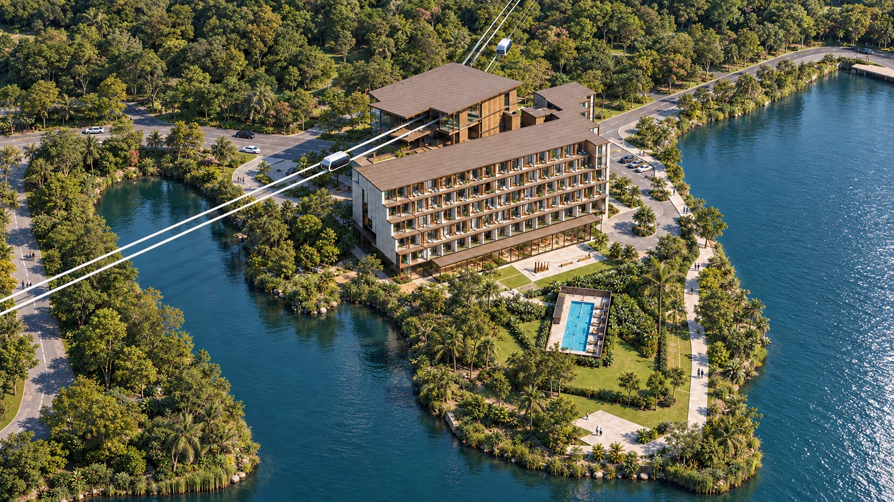
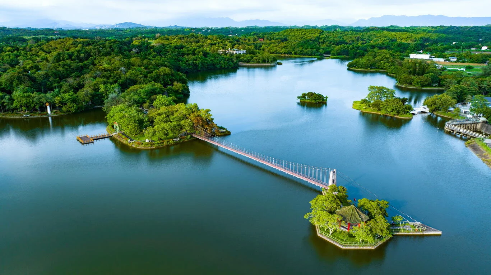
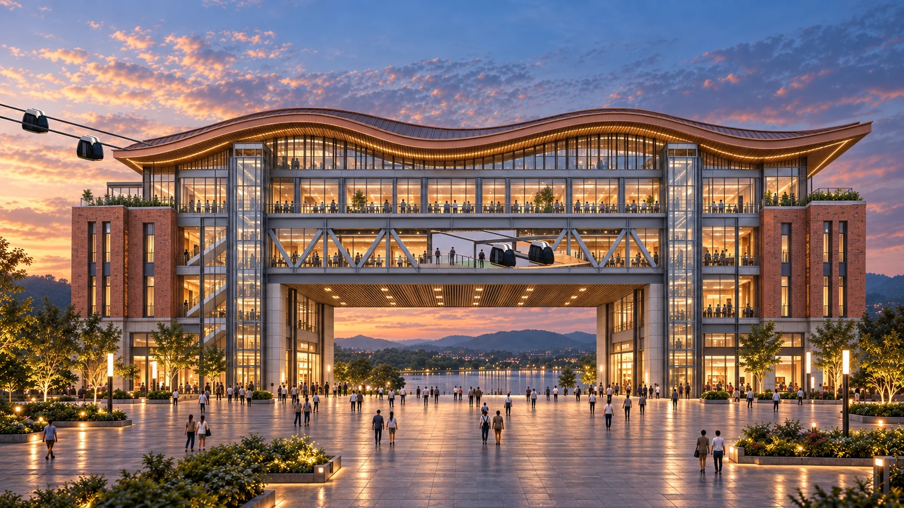
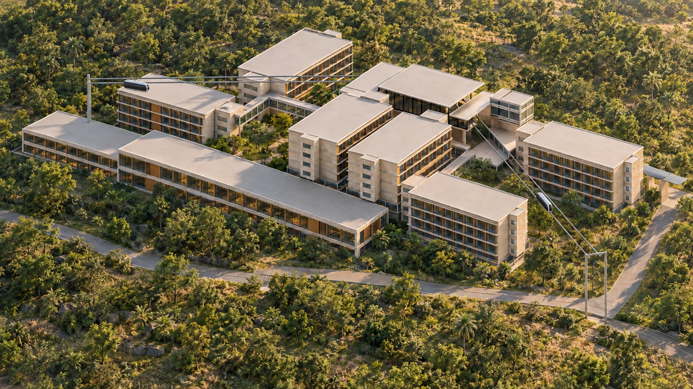
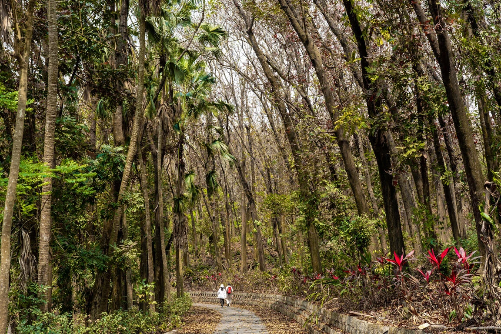

建築設計意象01 / LAKESIDET2 · 湖濱旅館站
把湖光，留在窗前。
以湖景與安靜停留為核心，結合站旅共構的抵達體驗。為兩人假期與深度休息，構想一段從容、私密的湖畔時光。
TAINAN · XINHUA · TAIWAN
把時間留給風景，
把最好的自己，留給生活。
一湖・一線・四站風景
A slower way to discover.
四站一線度假計畫籌備中；本站為品牌與體驗提案，尚未開放纜車及旅宿預訂。
臺南新化・湖森生活

日光、水色，與剛剛好的留白。離開匆忙的日常，
在一片湖光裡，重新感受時間。
虎頭埤的湖水、新化的街巷、丘陵間的綠意，串起南臺灣獨有的生活風景。我們以四站一線為起點，構想一段從空中移動、湖畔停留，到森林漫步的完整旅程。
可以是兩人的靜好假期、一家人的自然探索，也可以是一段留給自己的休息時間。讓旅行從「到過哪裡」，慢慢變成「如何好好生活」。
探索六種自然生活體驗 ↗四站一線・一路發現
從新化之門出發，向湖而行，再走進森林。
四種停留方式，串起一段完整的度假時光。

T1 新化之門｜既有設計意象THE GATEWAY
以銅色波浪屋頂與紅磚語彙迎接旅人，串聯入口廣場、商店街與空中旅程。讓抵達本身，就成為值得放慢腳步的第一站。
路線順序示意，非地理比例圖。第一階段規劃 T1–T3，第二階段延伸 T4；各站內容依整體計畫推進。
湖畔住宿・山城假期
從靜謐的湖畔，到豐富的山城生活，
找到適合自己的停留方式。

建築設計意象01 / LAKESIDE以湖景與安靜停留為核心，結合站旅共構的抵達體驗。為兩人假期與深度休息，構想一段從容、私密的湖畔時光。

建築材質意象02 / HILLSIDE以丘陵綠意為背景，整合度假住宿、餐飲、聚會與文化體驗。從家庭出遊到重要相聚，讓每個人都找到自己的旅行步調。
旅宿內容為規劃構想，建築圖片為既有方案意象；房型、設施、價格及開放日期以日後正式公告為準。

LESS HURRY. MORE LIFE.
聽見風、看見光，也聽見自己。
六種體驗・一種從容
以自然、飲食、活動與陪伴，
構想屬於虎頭埤的身心休憩體驗。
沿著綠蔭緩步前進，依體力安排路線，把運動變成親近自然的一部分。
留一段沒有螢幕的時間，在水色與微風之間，感受呼吸與身體的節奏。
以在地食材與當季風味為靈感，從一頓好好吃的飯，認識土地的滋味。
減少緊湊安排，保留午后的休息與完整夜晚，讓住宿成為旅程的主角。
從自然觀察到共同用餐，讓不同世代在同一段旅程裡，找到相處的樂趣。
走近新化地方記憶，探索商店街、公共藝術與空間故事，帶走有溫度的回憶。
以上為體驗策劃方向，屬休閒與生活提案，不提供醫療診斷或療效承諾。
旅程提案
不必把每一分鐘排滿。
依停留時間，找到適合你的慢旅靈感。
未來營運情境提案，非已開賣套裝行程。
逛一段商店街，喝一杯咖啡，讓自己切換到旅行模式。
以空中旅程串聯湖濱風景，為一頓在地午餐留足時間。
走進湖濱山城，在綠意、展陳與茶點之間自在停留。
旅讀虎頭埤
OUR VISION
「臺南市新化區虎頭埤地區纜車興建營運移轉案」以四站一線串聯地方旅遊、住宿、餐飲與自然體驗。網站品牌提案以「湖・森・慢旅」為主題，讓交通成為風景的一部分，讓停留為地方帶來更多可能。
本網站為籌備階段設計提案。新建纜車、旅館與體驗服務尚未開放；現有風景區的遊園資訊請以官方公告為準。
走近虎頭埤
目的地位於臺南市新化區。
現在就想走走？可先查看現有風景區的交通與遊園資訊。
新設車站入口、接駁及停車方式，將依實際開放計畫另行公告。
四站一線與新建旅宿仍在籌備規劃階段，目前未開放乘車、訂房或套裝行程銷售。本站提供未來體驗構想，可先製作與下載旅程草案。
新化之門是出發、餐飲與選物的門戶；湖濱旅館站以安靜的湖景度假為主；湖濱山城站整合住宿與聚會體驗；新化林場站以森林休憩為方向，規劃於第二階段延伸。
親子與跨世代旅行是體驗策劃方向之一。各設施的無障礙動線、路線難度與使用條件，將在營運前公布；森林路線須依旅人的體力與當日狀況選擇。
本站的健康休憩以散步、自然接觸、飲食、休息與陪伴為內容方向，不代表已設置醫療設施，也不承諾疾病治療或健康改善效果。
湖泊與森林照片為地方實景；站體與旅館圖片均標示為設計意象。行程為未來營運情境的內容提案，房型、費用、設施與開放日期以後續正式公告為準。
YOUR NEXT CHAPTER, IN NATURE.
從一段喜歡的旅程，開始想像。